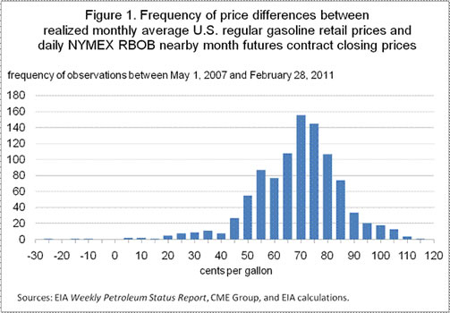
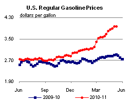
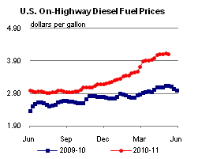
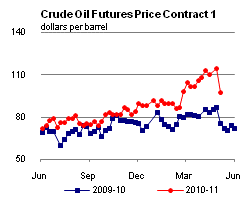
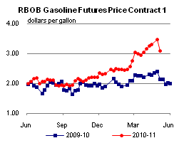
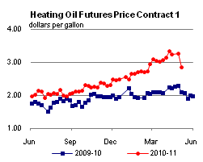
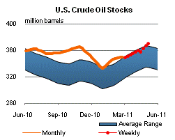
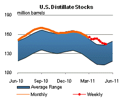
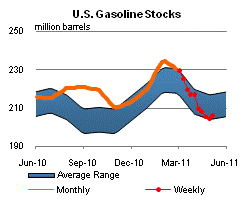
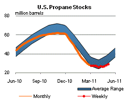

Released: May 11, 2011
Next Release: May 18, 2011
The relationship between retail gasoline prices and NYMEX RBOB futures prices
With the national average regular gasoline retail price recently having approached $4 per gallon, there is significant interest in how high gasoline prices may go this summer. The Short-Term Energy Outlook (STEO), released yesterday, presents the U.S. Energy Information Administration's (EIA) forecasts of monthly average gasoline prices. The projected monthly average U.S. regular gasoline retail price in the STEO peaks at $3.88 per gallon in June. However, the STEO recognizes the uncertainty of any price forecast.
The STEO points to the New York Mercantile Exchange's (NYMEX) futures market for New York Harbor reformulated gasoline before oxygenate blending (RBOB) futures contracts for nearby months as a key indicator of the market's current expectation of future gasoline prices. The NYMEX New York Harbor RBOB gasoline futures contract is for wholesale non-oxygenated gasoline blendstock traded in the New York Harbor market that is ready for blending with 10 percent by volume denatured fuel ethanol. RBOB is the only gasoline commodity that has markets for both futures and options contracts. Because this is a physically-settled contract there is usually a strong relationship between the RBOB futures price and the spot market price.
Over the past several years, the realized U.S. regular gasoline retail price (the pump price) averaged about 70 cents per gallon higher than the RBOB futures contract price. The NYMEX RBOB futures contract for June 2011 traded in the range from $3.10 to $3.40 per gallon since the beginning of May. Assuming that average retail-RBOB spread holds, these futures prices are consistent with a national average regular retail gasoline price in the $3.80 to $4.10 per gallon range during June.
As recent price movements demonstrate, expectations are constantly changing, driven by domestic and global political and economic news and events, such as the disruption of Libyan oil supply, last month's unexpected U.S. refinery outages, new estimates and projections of world economic and energy demand growth, or the significant sell-off across a broad set of commodities at the end of last week.
The realized RBOB spot price may be significantly higher or lower than the past futures contract prices for delivery in that month. But, over time, the occurrences of price under-predictions tend to be balanced by over-predictions. In other words, although realized spot prices can be significantly different from futures contract prices from the previous month, several studies have found that futures prices are unbiased predictors of realized spot prices.
In considering future retail gasoline prices, two useful indicators of uncertainty are (1) the implied volatility of the futures contract prices, and (2) past changes in the relationship between the front-month RBOB futures contract price and the national average retail gasoline price in the following month.
Starting with the spread between nearby month RBOB prices and realized national average retail pump prices, EIA calculated an average difference of about 70 cents per gallon over the May 2007 through February 2011 period. However, there was a wide range of price spreads (Figure 1). When prices are rising, the realized retail price may be significantly more than 70 cents above the RBOB futures price the month before. For example, on May 1, 2008 the June 2008 RBOB futures contract was $2.88 per gallon while the June 2008 gasoline retail price averaged $4.05 per gallon, a $1.17 per gallon difference. Similarly, when prices are falling, realized gasoline retail prices can be significantly less than 70 cents above the prior month RBOB futures contract price. On October 1, 2008, the November 2008 RBOB futures contract traded at $2.36 per gallon while the final November 2008 gasoline retail price averaged $2.15 per gallon, $0.21 per gallon below the RBOB contract price.
Second, EIA considers the probability the realized RBOB spot price may be above or below given price levels based on the futures contract price and the implied volatility derived from prices in the futures options markets (see Energy Price Volatility and Forecast Uncertainty). For example, over the 5 days ending May 5, 2011, the NYMEX RBOB futures contract for June 2011 delivery averaged $3.30 per gallon with an implied volatility of 25 percent. The probability that the RBOB spot price will exceed $3.50 per gallon in June 2011 is therefore about 15 percent. To determine if this probability is consistent with the probability the gasoline retail price may be over $4.20 per gallon (RBOB futures price plus $0.70 per gallon) EIA performed a Monte Carlo analysis of the joint probability distribution for (1) the price difference of the RBOB futures settlement price and the AAA daily gasoline price, and (2) the price difference between the futures nearby contract price and the RBOB futures settlement price. Based on this assessment, the probability that the June 2011 retail price may exceed $4.20 per gallon based on the simulated joint distribution is about 17 percent.

Retail gasoline up slightly while diesel prices fall
The U.S. average retail price of regular gasoline added two-tenths of a cent last week to hit $3.97per gallon. This is $1.06 per gallon higher than last year at this time. The biggest increase came in the Rocky Mountain region, where prices were almost three cents higher on the week. The East Coast saw the average price rise about two cents. The West Coast registered a penny gain on last week's price, while Gulf Coast prices were half a cent higher. Meanwhile, the average gasoline price in the Midwest dropped about three cents to $3.98 per gallon. This leaves the West Coast, with a regional average of $4.15 per gallon, as the only major region where prices average above $4 per gallon.
The national average diesel price fell two cents this week, dropping to $4.10 per gallon. The diesel price is $0.98 per gallon higher than last year at this time. This was the largest weekly decline in the national average diesel price since November 2010. Leading the regional declines was the Gulf Coast, where prices were almost four cents per gallon lower than last week. Gulf Coast diesel prices remain the lowest in the country at $4.02 per gallon. The West Coast and Midwest both logged price decreases of about two cent per gallon. However, West Coast prices continue to be the highest in the country at $4.31 per gallon. The East Coast saw diesel prices fall a penny from last week. In the Rocky Mountains, diesel prices were flat on the week, ending a run of 23 consecutive weekly increases in the region.
Propane inventories record another strong build
Total U.S. inventories of propane grew by 1.0 million barrels last week to end at 28.8 million barrels as the propane industry begins its seasonal build. Most of the stock build occurred in the Midwest region of the country, which showed 1.2 million barrels of new propane stocks. The East Coast region added 0.4 million barrels and the Rocky Mountain/West Coast regional stocks were up slightly. The Gulf Coast regional inventories dropped 0.6 million barrels. Propylene non-fuel use inventories represented 5.4 percent of total propane inventories.
Text from the previous editions of This Week In Petroleum is accessible through a link at the top right-hand corner of this page.
|  |  | ||||||
| Retail Data | Changes From | Retail Data | Changes From | ||||
| 05/09/11 | Week | Year | 05/09/11 | Week | Year | ||
| Gasoline | 3.965 | Diesel Fuel | 4.104 | ||||
|  |  | ||||||||||||||||||||||||||
|
 | ||||||||||||||||||||||||||
| *Note: Crude Oil Price in Dollars per Barrel. | |||||||||||||||||||||||||||
|  |  | ||||||
|  |  | ||||||
| Stocks Data | Changes From | Stocks Data | Changes From | ||||
| 05/06/11 | Week | Year | 05/06/11 | Week | Year | ||
| Crude Oil | 370.3 | Distillate | 144.3 | ||||
| Gasoline | 205.8 | Propane | 28.761 | ||||